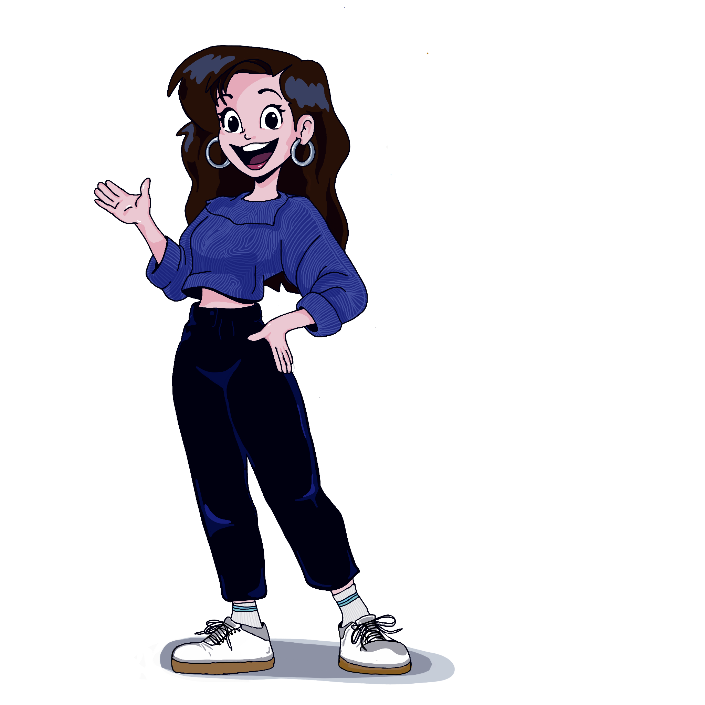

Crosslinked connections
Bridging polymer science, industry and communication.
Explore an evolving professional network inspired by a crosslinked polymer. Hover, focus or tap a node to follow the connections.

Career Journey
Building connections through science, industry and communication.
From chemical engineering and polymer chemistry to healthcare plastics recycling, industrial collaboration and science communication, each stage has expanded my network and expertise.
-
2015 - 2019
University of Manchester
MEng Chemical & Biological Engineering
First Class Honours degree providing a foundation in materials, sustainability, process engineering and analytical problem solving.
-
2019 - 2023
Doctoral Research
PhD in Polymer Chemistry
Advanced research into polymer materials, analytical chemistry and characterisation techniques, leading to publications and specialist expertise in polymer science.
images/polymer-biodegradation.png -
2023 - Present
Research Associate
Healthcare Plastics Recycling
Developing solutions for healthcare plastics recycling and circular economy challenges through collaboration with industrial and healthcare partners.
images/polymer-sample.png -
Current Project
Analytical Workflow Development
Polycarbonate Additive Tracking
Developing analytical workflows to identify additives and degradation products across recycling cycles using selective extraction, MALDI-MS and NMR spectroscopy.
images/polycarbonate-analysis.png -
Current Project
Data Science
Automated Polymer Analytics
Developing reproducible R workflows for peak detection, Kendrick Mass Defect analysis, data visualisation and reporting of complex mass spectrometry datasets.
images/data-analysis.png -
Current
Leadership
Dodgeball Coaching
Coaching competitive dodgeball squads while completing Level 2 coaching qualifications and supporting athlete development.
images/dodgeball-coaching.png -
Growing
Science Communication
Illustration & Public Engagement
Combining scientific expertise with illustration and visual storytelling to make polymer science accessible to wider audiences.
images/science-communication.png -
Future
Consultancy & Portfolio
Bridging Academia and Industry
Building consultancy and freelance activities centred on polymer recycling, analytical chemistry, industry translation and science communication.
images/academia-industry.png
The metaphor
A resilient network is built through crosslinks.
The structure deliberately borrows from hand-drawn polymer diagrams. Research themes form the backbone, projects create branches, and interdisciplinary work creates the crosslinks.
Start a conversation